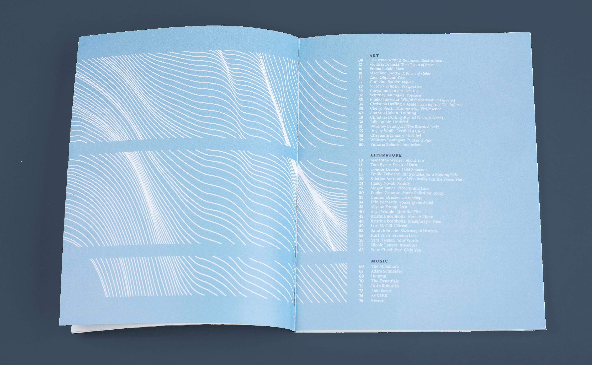

nota creative culture publication
art direction
editorial
illustration
NOTA (None of the Above) is the award-winning literature, art, and music publication at University of Wisconsin - Eau Claire. NOTA has existed at UW-Eau Claire since the 1980s, and has grown from a small-scale newspaper to a professionally-printed and bound book. Through student funding and wide community support, the publication has been able to remain free to everyone and has become a bridge between the university and the city of Eau Claire, hosting public events like Open Reads, concerts, and book release parties.
During my time working for NOTA, I held the positions of graphic designer and assistant art director and have worked on the production of three books and numerous smaller publications and materials.
spring 2014 book
Graphic design, illustration, photo shoot direction (flower letters)
Created in collaboration with Bryce Kunkel, Cheryl Peick, and Serena Wagner.
fall 2014 book
Art Direction, Graphic design, Cover Art
Created in collaboration with Bryce Kunkel, Cheryl Peick, and Christian Sather.

spring 2015 book
Art Direction, Graphic design, Cover Art
Created in collaboration with Bryce Kunkel, Cheryl Peick, and Zachary Oliphant.